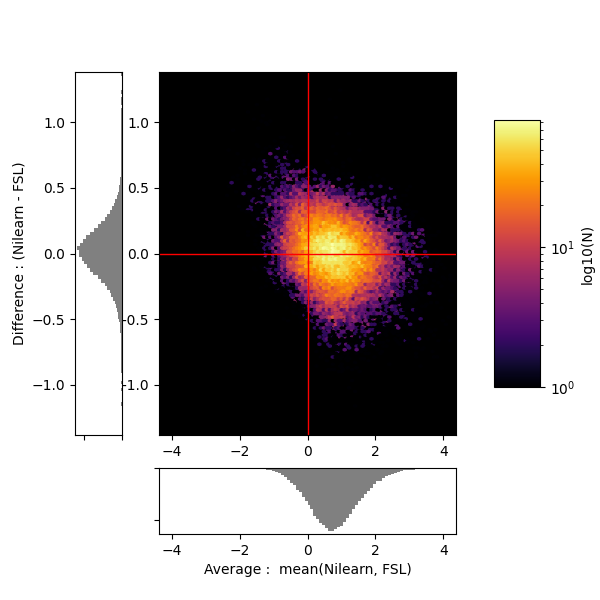

Note
Click here to download the full example code or to run this example in your browser via Binder
9.5.10. First level analysis of a complete BIDS dataset from openneuro¶
Full step-by-step example of fitting a GLM to perform a first level analysis in an openneuro BIDS dataset. We demonstrate how BIDS derivatives can be exploited to perform a simple one subject analysis with minimal code. Details about the BIDS standard are available at http://bids.neuroimaging.io/. We also demonstrate how to download individual groups of files from the Openneuro s3 bucket.
More specifically:
Download an fMRI BIDS dataset with derivatives from openneuro.
Extract first level model objects automatically from the BIDS dataset.
Demonstrate Quality assurance of Nistats estimation against available FSL. estimation in the openneuro dataset.
Display contrast plot and uncorrected first level statistics table report.
To run this example, you must launch IPython via ipython
--matplotlib in a terminal, or use the Jupyter notebook.
9.5.10.1. Fetch openneuro BIDS dataset¶
We download one subject from the stopsignal task in the ds000030 V4 BIDS dataset available in openneuro. This dataset contains the necessary information to run a statistical analysis using Nilearn. The dataset also contains statistical results from a previous FSL analysis that we can employ for comparison with the Nilearn estimation.
from nilearn.datasets import (
fetch_ds000030_urls,
fetch_openneuro_dataset,
select_from_index,
)
_, urls = fetch_ds000030_urls()
exclusion_patterns = ['*group*', '*phenotype*', '*mriqc*',
'*parameter_plots*', '*physio_plots*',
'*space-fsaverage*', '*space-T1w*',
'*dwi*', '*beh*', '*task-bart*',
'*task-rest*', '*task-scap*', '*task-task*']
urls = select_from_index(
urls, exclusion_filters=exclusion_patterns, n_subjects=1)
data_dir, _ = fetch_openneuro_dataset(urls=urls)
9.5.10.2. Obtain FirstLevelModel objects automatically and fit arguments¶
From the dataset directory we automatically obtain FirstLevelModel objects with their subject_id filled from the BIDS dataset. Moreover we obtain, for each model, the list of run images and their respective events and confound regressors. Those are inferred from the confounds.tsv files available in the BIDS dataset. To get the first level models we have to specify the dataset directory, the task_label and the space_label as specified in the file names. We also have to provide the folder with the desired derivatives, that in this case were produced by the fMRIPrep BIDS app.
from nilearn.glm.first_level import first_level_from_bids
task_label = 'stopsignal'
space_label = 'MNI152NLin2009cAsym'
derivatives_folder = 'derivatives/fmriprep'
models, models_run_imgs, models_events, models_confounds = \
first_level_from_bids(data_dir, task_label, space_label,
smoothing_fwhm=5.0,
derivatives_folder=derivatives_folder)
Out:
/home/circleci/miniconda3/envs/testenv/lib/python3.8/site-packages/nilearn/glm/first_level/first_level.py:937: UserWarning:
SliceTimingRef not found in file /home/circleci/nilearn_data/ds000030/ds000030_R1.0.4/uncompressed/sub-10159/func/sub-10159_task-stopsignal_bold.json. It will be assumed that the slice timing reference is 0.0 percent of the repetition time. If it is not the case it will need to be set manually in the generated list of models
Access the model and model arguments of the subject and process events.
model, imgs, events, confounds = (
models[0], models_run_imgs[0], models_events[0], models_confounds[0])
subject = 'sub-' + model.subject_label
model.minimize_memory = False # override default
import os
from nilearn.interfaces.fsl import get_design_from_fslmat
fsl_design_matrix_path = os.path.join(
data_dir, 'derivatives', 'task', subject, 'stopsignal.feat', 'design.mat')
design_matrix = get_design_from_fslmat(
fsl_design_matrix_path, column_names=None)
We identify the columns of the Go and StopSuccess conditions of the design matrix inferred from the FSL file, to use them later for contrast definition.
design_columns = ['cond_%02d' % i for i in range(len(design_matrix.columns))]
design_columns[0] = 'Go'
design_columns[4] = 'StopSuccess'
design_matrix.columns = design_columns
9.5.10.3. First level model estimation (one subject)¶
We fit the first level model for one subject.
model.fit(imgs, design_matrices=[design_matrix])
Then we compute the StopSuccess - Go contrast. We can use the column names of the design matrix.
z_map = model.compute_contrast('StopSuccess - Go')
We show the agreement between the Nilearn estimation and the FSL estimation available in the dataset.
import nibabel as nib
fsl_z_map = nib.load(
os.path.join(data_dir, 'derivatives', 'task', subject, 'stopsignal.feat',
'stats', 'zstat12.nii.gz'))
from nilearn import plotting
import matplotlib.pyplot as plt
from scipy.stats import norm
plotting.plot_glass_brain(z_map, colorbar=True, threshold=norm.isf(0.001),
title='Nilearn Z map of "StopSuccess - Go" (unc p<0.001)',
plot_abs=False, display_mode='ortho')
plotting.plot_glass_brain(fsl_z_map, colorbar=True, threshold=norm.isf(0.001),
title='FSL Z map of "StopSuccess - Go" (unc p<0.001)',
plot_abs=False, display_mode='ortho')
plt.show()
from nilearn.plotting import plot_img_comparison
plot_img_comparison([z_map], [fsl_z_map], model.masker_,
ref_label='Nilearn', src_label='FSL')
plt.show()


9.5.10.4. Simple statistical report of thresholded contrast¶
We display the contrast plot and table with cluster information
from nilearn.plotting import plot_contrast_matrix
plot_contrast_matrix('StopSuccess - Go', design_matrix)
plotting.plot_glass_brain(z_map, colorbar=True, threshold=norm.isf(0.001),
plot_abs=False, display_mode='z',
figure=plt.figure(figsize=(4, 4)))
plt.show()
- 

We can get a latex table from a Pandas Dataframe for display and publication purposes
from nilearn.reporting import get_clusters_table
print(get_clusters_table(z_map, norm.isf(0.001), 10).to_latex())
Out:
/home/circleci/project/examples/04_glm_first_level/plot_bids_features.py:151: FutureWarning:
In future versions `DataFrame.to_latex` is expected to utilise the base implementation of `Styler.to_latex` for formatting and rendering. The arguments signature may therefore change. It is recommended instead to use `DataFrame.style.to_latex` which also contains additional functionality.
\begin{tabular}{llrrrrl}
\toprule
{} & Cluster ID & X & Y & Z & Peak Stat & Cluster Size (mm3) \\
\midrule
0 & 1 & -66.0 & -45.0 & 22.0 & 5.307532 & 6300 \\
1 & 1a & -66.0 & -33.0 & 18.0 & 4.668929 & \\
2 & 1b & -48.0 & -36.0 & 14.0 & 4.534376 & \\
3 & 1c & -57.0 & -48.0 & 10.0 & 4.254210 & \\
4 & 2 & -42.0 & 15.0 & 26.0 & 4.918703 & 2520 \\
5 & 2a & -51.0 & 9.0 & 34.0 & 4.715845 & \\
6 & 2b & -42.0 & 9.0 & 30.0 & 4.683343 & \\
7 & 2c & -57.0 & 12.0 & 38.0 & 4.587956 & \\
8 & 3 & 57.0 & -27.0 & 2.0 & 4.692869 & 504 \\
9 & 3a & 66.0 & -27.0 & 2.0 & 3.664250 & \\
10 & 4 & 42.0 & 9.0 & 34.0 & 4.461193 & 540 \\
11 & 5 & 6.0 & 18.0 & 34.0 & 4.257986 & 2520 \\
12 & 5a & -3.0 & 15.0 & 46.0 & 4.078390 & \\
13 & 5b & 0.0 & 0.0 & 38.0 & 3.815609 & \\
14 & 5c & 3.0 & 9.0 & 50.0 & 3.798387 & \\
15 & 6 & 6.0 & 6.0 & 54.0 & 4.208105 & 468 \\
16 & 6a & 6.0 & 3.0 & 62.0 & 3.348351 & \\
17 & 7 & -45.0 & 21.0 & 2.0 & 4.190472 & 504 \\
18 & 7a & -54.0 & 21.0 & 6.0 & 3.385929 & \\
19 & 8 & 45.0 & -21.0 & 42.0 & 4.163956 & 432 \\
20 & 9 & 63.0 & -24.0 & 30.0 & 4.079389 & 360 \\
21 & 10 & -12.0 & 6.0 & 6.0 & 4.056165 & 792 \\
22 & 10a & -9.0 & -3.0 & 10.0 & 3.726486 & \\
23 & 10b & -9.0 & 6.0 & 14.0 & 3.710553 & \\
24 & 11 & -27.0 & 45.0 & 18.0 & 4.043724 & 432 \\
25 & 12 & 3.0 & -24.0 & 30.0 & 3.950054 & 360 \\
26 & 13 & 12.0 & -72.0 & 22.0 & 3.937283 & 360 \\
27 & 14 & 33.0 & 42.0 & 34.0 & 3.906274 & 756 \\
28 & 14a & 30.0 & 45.0 & 26.0 & 3.882906 & \\
29 & 15 & 51.0 & -30.0 & 14.0 & 3.776293 & 648 \\
\bottomrule
\end{tabular}
9.5.10.5. Generating a report¶
Using the computed FirstLevelModel and contrast information, we can quickly create a summary report.
from nilearn.reporting import make_glm_report
report = make_glm_report(model=model,
contrasts='StopSuccess - Go',
)
We have several ways to access the report:
# report # This report can be viewed in a notebook
# report.save_as_html('report.html')
# report.open_in_browser()
9.5.10.6. Saving model outputs to disk¶
from nilearn.interfaces.bids import save_glm_to_bids
save_glm_to_bids(
model,
contrasts='StopSuccess - Go',
contrast_types={'StopSuccess - Go': 't'},
out_dir='derivatives/nilearn_glm/',
prefix=subject + '_task-stopsignal',
)


Out:
/home/circleci/miniconda3/envs/testenv/lib/python3.8/site-packages/nilearn/interfaces/bids/_utils.py:48: UserWarning:
Contrast name "StopSuccess - Go" changed to "stopsuccessMinusGo"
/home/circleci/miniconda3/envs/testenv/lib/python3.8/site-packages/nilearn/interfaces/bids/_utils.py:48: UserWarning:
Contrast name "StopSuccess - Go" changed to "stopsuccessMinusGo"
Extracting and saving residuals
Extracting and saving r_square
View the generated files
Out:
derivatives/nilearn_glm/dataset_description.json
derivatives/nilearn_glm/sub-10159_task-stopsignal_contrast-stopsuccessMinusGo_design.svg
derivatives/nilearn_glm/sub-10159_task-stopsignal_contrast-stopsuccessMinusGo_stat-effect_statmap.nii.gz
derivatives/nilearn_glm/sub-10159_task-stopsignal_contrast-stopsuccessMinusGo_stat-p_statmap.nii.gz
derivatives/nilearn_glm/sub-10159_task-stopsignal_contrast-stopsuccessMinusGo_stat-t_statmap.nii.gz
derivatives/nilearn_glm/sub-10159_task-stopsignal_contrast-stopsuccessMinusGo_stat-variance_statmap.nii.gz
derivatives/nilearn_glm/sub-10159_task-stopsignal_contrast-stopsuccessMinusGo_stat-z_statmap.nii.gz
derivatives/nilearn_glm/sub-10159_task-stopsignal_design.svg
derivatives/nilearn_glm/sub-10159_task-stopsignal_design.tsv
derivatives/nilearn_glm/sub-10159_task-stopsignal_stat-errorts_statmap.nii.gz
derivatives/nilearn_glm/sub-10159_task-stopsignal_stat-rSquare_statmap.nii.gz
derivatives/nilearn_glm/sub-10159_task-stopsignal_statmap.json
Total running time of the script: ( 0 minutes 24.845 seconds)
Estimated memory usage: 526 MB